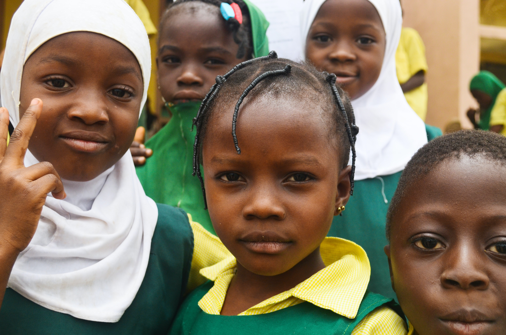

15/07/2021
The COVID-19 pandemic has caused severe economic hardships in the developing world. Many countries must now choose between meeting debt obligations or investing in their heavily strained public services. NGOs, world leaders, and public figures are calling for debts to be cancelled so that countries can meet their development goals. Though there are conditions where debt cancellation should be granted, some economists argue that it creates perverse incentives for corruption and perpetual debt accumulation. Ultimately, debt cancellation should only be awarded to trustworthy countries that have a proven track record of enacting positive social reforms.
Why is debt cancellation needed?
On the 15th April 2020, G20 finance ministers agreed to temporarily halt debt repayments for developing countries so that they could effectively respond to the COVID-19 pandemic. Though this strategy was estimated to free up $12-14 billion for the poorest 76 countries, it only delayed debt repayments rather than cancelling them. Debt distress is now ubiquitous among developing countries, with 50% of the countries eligible for World Bank IDA support being either at risk of debt distress or already in debt distress. Many in the development sector believe that debt cancellation – as opposed to debt relief – is needed to improve development outcomes. Debt cancellation programmes such as the Heavily Indebted Poor Countries (HIPC) initiative has had a positive impact on developing countries. The HIPC initiative allows countries to invest more in their economies by cancelling debt up to a point of sustainability. Eligible HIPC countries were, on average, spending more on debt service than on health and education combined before the initiative. Now, average public spending is five times that of debt service repayments.
Highly indebted poor countries are struggling to meet debt obligations and achieve economic development at the same time. Former UN special advisor, Jeffery Sachs, argues in his book The End of Poverty that poor nations cannot meet development goals unless debts are cancelled. Over half of low and middle-income countries are spending more on external debt repayments than on public health services. Sri Lanka, for example, spends 48% of its government revenue on debt service, compared to the UK who spend 6%. An inquiry by the House of Commons International Development Committee found that debt relief will not be enough to help the most vulnerable countries recover from the COVID-19 pandemic. In many of these countries, the indirect effects of the pandemic, such as worsening poverty and female education levels, are being felt more heavily than the health effects of COVID. Strong action must therefore be taken to prevent further deterioration of development outcomes.
A group of African school girls. Photo credit: Abubakar Balogun from Unsplash
Moreover, all lenders must take collective action for debt cancellation to be effective in improving economic conditions for developing countries. China – the largest single lender in the world – holds 15% of the 50 most indebted developing countries’ debt. Western countries have demanded greater transparency of China’s lending, but have achieved little success in that pursuit. China’s willingness to lend to poorer nations has reduced the leverage intergovernmental organisation have in encouraging positive reforms in developing countries. Besides China, some of the world’s largest banks and asset management companies, such as BlackRock and HSBC, hold trillions of dollars in debt and are yet to offer any form of debt cancellation. Without full cooperation from all lenders, debt cancellation will not be as effective.
The bad incentives of debt cancellation
Despite its benefits, some economists have argued that debt cancellation can sometimes harm developing countries. In his book The Elusive Quest for Growth, William Easterly argues that debt cancellation can create perverse incentives for debt accumulation. The data on debt relief from the World Bank’s debt tables show that debt cancellation for 41 highly indebted countries totalled $33 billion from 1989 to 1996, while their new borrowing totalled $41 billion in the same period. Moreover, in 2005, 30 African countries had their debts wiped under the HIPC initiative. This was ineffective in creating debt sustainability for some of those countries. Zambia, for example, increased its debt to 59% of its GDP in less than 10 years. The expectation of future debt cancellation can incentivise countries such as Zambia to accumulate more debt and engage in reckless spending. This often leads to a reduction in foreign investment and a weakening of the country’s economy. One study finds that debt cancellation can sometimes lead to a 20% reduction in GDP growth in the long run.
Furthermore, the lending policies of intergovernmental organisations also incentivises irresponsible borrowing. In his book The Elusive Quest for Growth, William Easterly states that despite bad policies, HIPC countries received more aid than other developing countries. Haiti, a country that ranks 170th in the corruption perceptions index, has accumulated large amounts of debt to finance government patronage employment and unnecessarily large military forces. Moreover, in Zambia, government officials have not-so-cleverly engaged in embezzlement by skimming from government contracts. This included new roads that supposedly cost twice as much to build as other neighbouring countries and fire engines that cost $1 million each, a value inflated by 70%. Given the bad policies and corruption of some governments, not all countries should have their debts cancelled.

A woman holds a sign that reads, "Let’s fight corruption together". Photo credit: Nathaniel Tetteh from Upsplash
Rich nations and intergovernmental organisations should act to improve the lives of those in all poor countries. Given that debt payments can divert money away from health and education, some form of debt cancellation can not only be helpful but morally obligatory. However, debt cancellation has often rewarded countries that have previously misused loans and are therefore liable to do it again. Not only that but it has diverted funds away from poor nations that have good policies and low debt. Debt cancellation should only be given to countries that have a proven track record of responsible policies, and only under the condition that it will only be granted once. In the absence of this, debt cancellation will continue to create incentives for future debt accumulation.